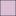
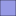
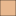
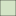
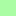

<!doctype html>
<html lang="en">
    <head>
        <meta charset="utf-8">
        <meta http-equiv="X-UA-Compatible" content="IE=edge">
        <meta name="viewport" content="initial-scale=1,user-scalable=no,maximum-scale=1,width=device-width">
        <meta name="mobile-web-app-capable" content="yes">
        <meta name="apple-mobile-web-app-capable" content="yes">
        <link rel="stylesheet" href="css/leaflet.css"><link rel="stylesheet" href="http://maxcdn.bootstrapcdn.com/font-awesome/4.6.1/css/font-awesome.min.css"><link rel="stylesheet" href="css/L.Control.Locate.min.css">
        <link rel="stylesheet" href="css/qgis2web.css">
        <style>
        html, body, #map {
            width: 100%;
            height: 100%;
            padding: 0;
            margin: 0;
        }
        </style>
        <title></title>
    </head>
    <body>
        <div id="map">
        </div>
        <script src="js/qgis2web_expressions.js"></script>
        <script src="js/leaflet.js"></script><script src="js/L.Control.Locate.min.js"></script>
        <script src="js/leaflet.rotatedMarker.js"></script>
        <script src="js/leaflet.pattern.js"></script>
        <script src="js/leaflet-hash.js"></script>
        <script src="js/Autolinker.min.js"></script>
        <script src="js/rbush.min.js"></script>
        <script src="js/labelgun.min.js"></script>
        <script src="js/labels.js"></script>
        <script src="data/zone5_1.js"></script>
        <script src="data/zone4_2.js"></script>
        <script src="data/zone3_3.js"></script>
        <script src="data/zone2_4.js"></script>
        <script src="data/zone1_5.js"></script>
        <script>
        var map = L.map('map', {
            zoomControl:true, maxZoom:28, minZoom:1
        }).fitBounds([[13.0592486381,-59.5986480185],[13.1491306225,-59.4442007731]]);
        var hash = new L.Hash(map);
        map.attributionControl.addAttribution('<a href="https://github.com/tomchadwin/qgis2web" target="_blank">qgis2web</a>');
        L.control.locate().addTo(map);
        var bounds_group = new L.featureGroup([]);
        function setBounds() {
        }
        var overlay_OSMStandard_0 = L.tileLayer('http://tile.openstreetmap.org/{z}/{x}/{y}.png', {
            opacity: 1.0
        });
        overlay_OSMStandard_0.addTo(map);
        map.addLayer(overlay_OSMStandard_0);
        function pop_zone5_1(feature, layer) {
            var popupContent = '<table>\
                    <tr>\
                        <td colspan="2">' + (feature.properties['AREA'] !== null ? Autolinker.link(String(feature.properties['AREA'])) : '') + '</td>\
                    </tr>\
                    <tr>\
                        <td colspan="2">' + (feature.properties['LAYER'] !== null ? Autolinker.link(String(feature.properties['LAYER'])) : '') + '</td>\
                    </tr>\
                </table>';
            layer.bindPopup(popupContent, {maxHeight: 400});
        }

        function style_zone5_1_0() {
            return {
                pane: 'pane_zone5_1',
                opacity: 1,
                color: 'rgba(0,0,0,0.0)',
                dashArray: '',
                lineCap: 'butt',
                lineJoin: 'miter',
                weight: 1.0, 
                fill: true,
                fillOpacity: 1,
                fillColor: 'rgba(83,252,71,0.490196)',
            }
        }
        map.createPane('pane_zone5_1');
        map.getPane('pane_zone5_1').style.zIndex = 401;
        map.getPane('pane_zone5_1').style['mix-blend-mode'] = 'normal';
        var layer_zone5_1 = new L.geoJson(json_zone5_1, {
            attribution: '<a href=""></a>',
            pane: 'pane_zone5_1',
            onEachFeature: pop_zone5_1,
            style: style_zone5_1_0,
        });
        bounds_group.addLayer(layer_zone5_1);
        map.addLayer(layer_zone5_1);
        function pop_zone4_2(feature, layer) {
            var popupContent = '<table>\
                    <tr>\
                        <td colspan="2">' + (feature.properties['AREA'] !== null ? Autolinker.link(String(feature.properties['AREA'])) : '') + '</td>\
                    </tr>\
                    <tr>\
                        <td colspan="2">' + (feature.properties['LAYER'] !== null ? Autolinker.link(String(feature.properties['LAYER'])) : '') + '</td>\
                    </tr>\
                </table>';
            layer.bindPopup(popupContent, {maxHeight: 400});
        }

        function style_zone4_2_0() {
            return {
                pane: 'pane_zone4_2',
                opacity: 1,
                color: 'rgba(0,0,0,0.498039)',
                dashArray: '',
                lineCap: 'butt',
                lineJoin: 'miter',
                weight: 1.0, 
                fill: true,
                fillOpacity: 1,
                fillColor: 'rgba(169,202,142,0.498039)',
            }
        }
        map.createPane('pane_zone4_2');
        map.getPane('pane_zone4_2').style.zIndex = 402;
        map.getPane('pane_zone4_2').style['mix-blend-mode'] = 'normal';
        var layer_zone4_2 = new L.geoJson(json_zone4_2, {
            attribution: '<a href=""></a>',
            pane: 'pane_zone4_2',
            onEachFeature: pop_zone4_2,
            style: style_zone4_2_0,
        });
        bounds_group.addLayer(layer_zone4_2);
        map.addLayer(layer_zone4_2);
        function pop_zone3_3(feature, layer) {
            var popupContent = '<table>\
                    <tr>\
                        <td colspan="2">' + (feature.properties['AREA'] !== null ? Autolinker.link(String(feature.properties['AREA'])) : '') + '</td>\
                    </tr>\
                    <tr>\
                        <td colspan="2">' + (feature.properties['LAYER'] !== null ? Autolinker.link(String(feature.properties['LAYER'])) : '') + '</td>\
                    </tr>\
                </table>';
            layer.bindPopup(popupContent, {maxHeight: 400});
        }

        function style_zone3_3_0() {
            return {
                pane: 'pane_zone3_3',
                opacity: 1,
                color: 'rgba(0,0,0,0.490196)',
                dashArray: '',
                lineCap: 'butt',
                lineJoin: 'miter',
                weight: 1.0, 
                fill: true,
                fillOpacity: 1,
                fillColor: 'rgba(210,113,28,0.490196)',
            }
        }
        map.createPane('pane_zone3_3');
        map.getPane('pane_zone3_3').style.zIndex = 403;
        map.getPane('pane_zone3_3').style['mix-blend-mode'] = 'normal';
        var layer_zone3_3 = new L.geoJson(json_zone3_3, {
            attribution: '<a href=""></a>',
            pane: 'pane_zone3_3',
            onEachFeature: pop_zone3_3,
            style: style_zone3_3_0,
        });
        bounds_group.addLayer(layer_zone3_3);
        map.addLayer(layer_zone3_3);
        function pop_zone2_4(feature, layer) {
            var popupContent = '<table>\
                    <tr>\
                        <td colspan="2">' + (feature.properties['AREA'] !== null ? Autolinker.link(String(feature.properties['AREA'])) : '') + '</td>\
                    </tr>\
                    <tr>\
                        <td colspan="2">' + (feature.properties['LAYER'] !== null ? Autolinker.link(String(feature.properties['LAYER'])) : '') + '</td>\
                    </tr>\
                </table>';
            layer.bindPopup(popupContent, {maxHeight: 400});
        }

        function style_zone2_4_0() {
            return {
                pane: 'pane_zone2_4',
                opacity: 1,
                color: 'rgba(0,0,0,0.490196)',
                dashArray: '',
                lineCap: 'butt',
                lineJoin: 'miter',
                weight: 1.0, 
                fill: true,
                fillOpacity: 1,
                fillColor: 'rgba(44,50,204,0.490196)',
            }
        }
        map.createPane('pane_zone2_4');
        map.getPane('pane_zone2_4').style.zIndex = 404;
        map.getPane('pane_zone2_4').style['mix-blend-mode'] = 'normal';
        var layer_zone2_4 = new L.geoJson(json_zone2_4, {
            attribution: '<a href=""></a>',
            pane: 'pane_zone2_4',
            onEachFeature: pop_zone2_4,
            style: style_zone2_4_0,
        });
        bounds_group.addLayer(layer_zone2_4);
        map.addLayer(layer_zone2_4);
        function pop_zone1_5(feature, layer) {
            var popupContent = '<table>\
                    <tr>\
                        <td colspan="2">' + (feature.properties['AREA'] !== null ? Autolinker.link(String(feature.properties['AREA'])) : '') + '</td>\
                    </tr>\
                    <tr>\
                        <td colspan="2">' + (feature.properties['LAYER'] !== null ? Autolinker.link(String(feature.properties['LAYER'])) : '') + '</td>\
                    </tr>\
                </table>';
            layer.bindPopup(popupContent, {maxHeight: 400});
        }

        function style_zone1_5_0() {
            return {
                pane: 'pane_zone1_5',
                opacity: 1,
                color: 'rgba(0,0,0,0.541176)',
                dashArray: '',
                lineCap: 'butt',
                lineJoin: 'miter',
                weight: 1.0, 
                fill: true,
                fillOpacity: 1,
                fillColor: 'rgba(188,139,178,0.541176)',
            }
        }
        map.createPane('pane_zone1_5');
        map.getPane('pane_zone1_5').style.zIndex = 405;
        map.getPane('pane_zone1_5').style['mix-blend-mode'] = 'normal';
        var layer_zone1_5 = new L.geoJson(json_zone1_5, {
            attribution: '<a href=""></a>',
            pane: 'pane_zone1_5',
            onEachFeature: pop_zone1_5,
            style: style_zone1_5_0,
        });
        bounds_group.addLayer(layer_zone1_5);
        map.addLayer(layer_zone1_5);
        var baseMaps = {};
        L.control.layers(baseMaps,{' zone1': layer_zone1_5,' zone2': layer_zone2_4,' zone3': layer_zone3_3,' zone4': layer_zone4_2,' zone5': layer_zone5_1,"OSM Standard": overlay_OSMStandard_0,}).addTo(map);
        setBounds();
        </script>
    </body>
</html>
